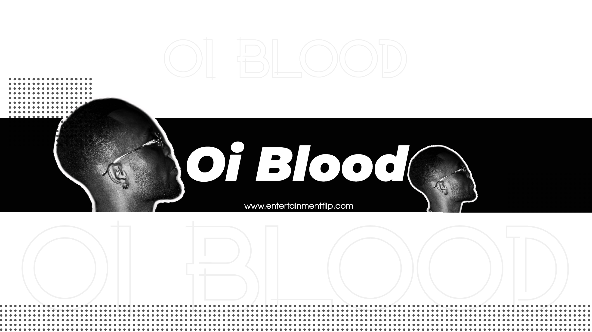

Oi Blood: A Symphony of Universal Connection
In the eclectic realm of Stockholm, Sweden, Oi Blood stands as a testament to the transcendent power of music and visual art. Beyond the confines of language, race, and background, Oi Blood's artistry becomes a universal escape, weaving a sonic and visual tapestry that resonates with listeners worldwide.
Oi Blood's journey reaches a pinnacle with a notable achievement—the electrifying performance at
the opening of BabyBoy Av alongside Mojo in Norway. This accomplishment echoes not only through
the corridors of music but across international borders.
While stages are often witness to artists making their mark, Oi Blood finds a profound
connection in a familial performance. Sharing the spotlight with two children, performing the
soulful rendition of "I Try," creates a moment where art and family harmonize, etching a memory
that transcends the ordinary.
Oi Blood's artistic signature goes beyond melodies; it's a compassionate embrace that infuses every note with emotion. This distinctive approach sets Oi Blood apart, turning each composition into a vessel for shared experiences and heartfelt connections.
As the musical journey unfolds, Oi Blood invites listeners into a world of dreams with tracks
like "Dreams" resonating across all platforms. The rhythmic celebration of summer continues with
"Summer Case," an auditory exploration of the season's vibrant sounds. The promise of a new year
brings anticipation for fresh musical expressions, hinting at a flood of creativity to come.
Oi Blood challenges the confines of musical ownership, proclaiming that music belongs to all. In
a world where divisions persist, Oi Blood's art serves as a unifying force, beckoning everyone
to join the collective experience.
Behind the scenes, the influence of artists like Mojo from Sweden becomes a guiding light. Mojo's impact extends beyond the music, providing Oi Blood with the freedom to express emotions through art, shaping a perspective rooted in artistic liberty.
Beyond the spotlight, Oi Blood navigates the intricate dance of life—juggling family duties,
work commitments, school runs, and precious moments in the studio. The challenge lies not just
in creating music but in finding harmony between the artistic and familial spheres, each
enriching the other.
Adding a touch of humor to the narrative, fans might be intrigued to discover that Oi Blood is
proudly Ghanaian, a revelation that playfully defies assumptions.
Oi Blood's advice echoes the iconic ethos of Nike: "Just Do It." The simplicity underscores the
importance of action, urging aspiring artists to plunge into their creative journeys fearlessly.
In a world often dominated by ego, Oi Blood imparts a lesson in humility. Putting ego aside
becomes the key to unlocking sustained success in the dynamic and competitive landscape of the
entertainment industry.
The wellspring of inspiration for Oi Blood is as simple as it is profound—listening to more music. This intentional immersion in diverse sounds becomes the heartbeat that fuels the flames of creativity, providing a constant source of motivation.
As the curtains draw on the current year, Oi Blood leaves readers with a tantalizing promise—the floodgates of music will open wide in 2024. The coming year holds the prospect of an auditory journey, inviting listeners to immerse themselves in the rhythmic tide of Oi Blood's creative expression. In this symphony of universal connection, Oi Blood's art becomes a bridge, uniting hearts through the language of melody and vision.